Abstract
Behavior Predictive Control (BPC) predicts actions from short segments of recorded demonstrations.
Neural behavior cloning compresses demonstrations into large models, making individual actions difficult to trace and policy updates costly. Retrieval policies retain access to demonstrations but struggle with mismatch between recorded and live behavior. We introduce Behavior Predictive Control (BPC), which synthesizes policies without end-to-end policy training by combining an action-aware retrieval metric, a Hankel-based action-continuation prior, and a closed-form one-step residual correction. Inspired by behavioral systems theory, BPC predicts future actions by blending stored observation-action data that best reconstructs the recent runtime observation--action history. Across simulated benchmarks and real-robot deployments, BPC is competitive with learned policies such as π0.5 (surpassing it in some cases), while reducing policy fitting from hours to seconds on consumer GPUs and supporting closed-loop control upwards of 75 Hz on a Jetson Orin Nano. The retrieved demonstration windows and their coefficients also provide an intrinsic estimate of task progress. Retaining demonstrations within the deployed policy makes its predictions traceable to supporting trajectories and enables behavior revision through the demonstration bank.
“Training-free” means no costly end-to-end neural policy training or fine-tuning.
Method
BPC retrieves demonstration segments, combines their future actions, and applies a residual correction at each control step.
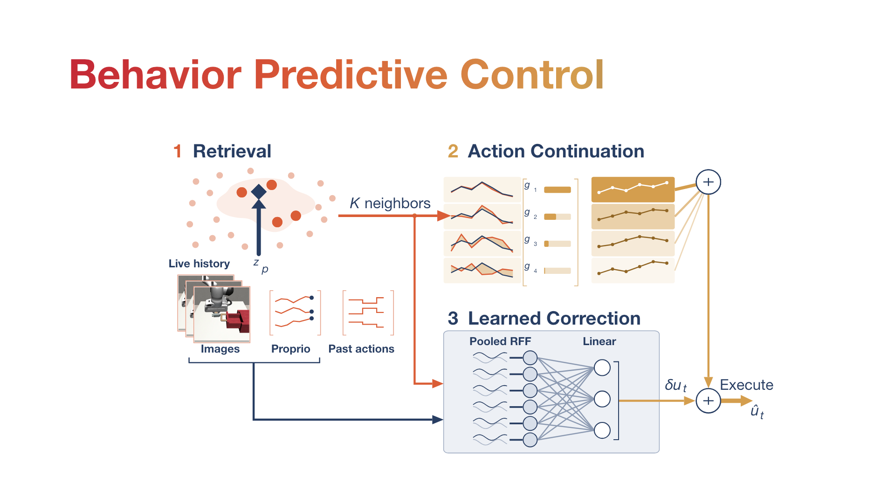
Retrieve demonstration segments
Use the fitted action-aware metric to retrieve segments with observation–action histories similar to the current history.
Action attribution
BPC retains the retrieved demonstration segments and the coefficients used to combine them.

Experiments
We evaluate BPC on manipulation and drone navigation, in simulation and on hardware.
Tabletop manipulation
Coffee, Drawer, and Switch tasks on a UFactory xArm6.
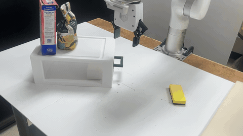
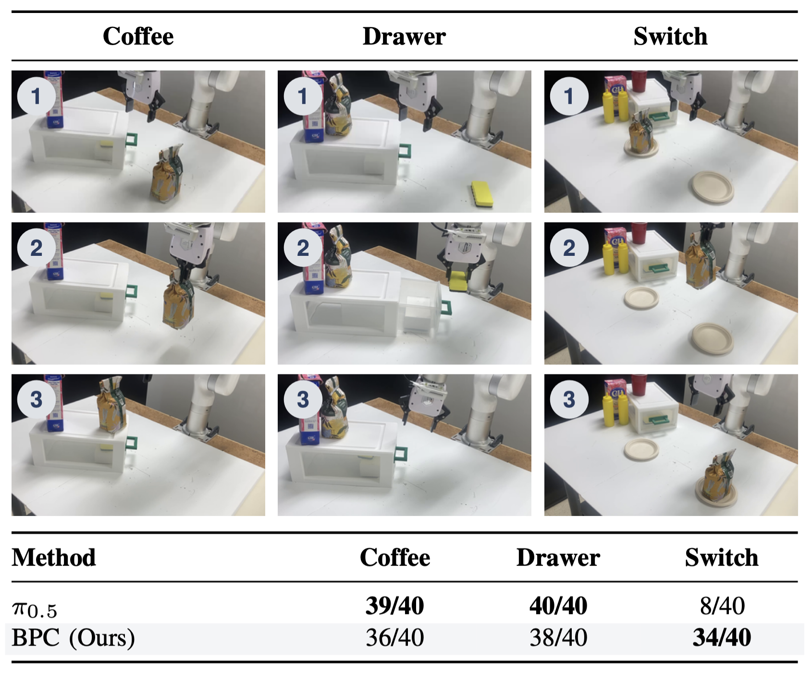
Switch task
The robot must place the bag on the plate opposite its starting position. This requires remembering which plate the bag came from.
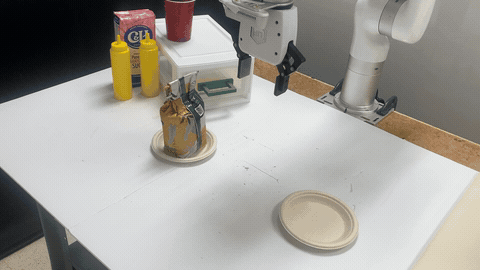
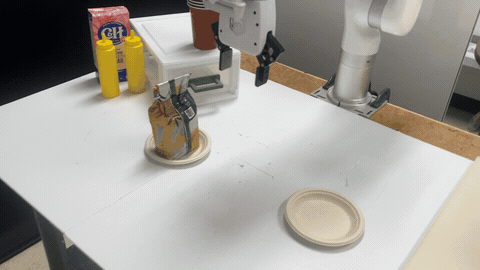
Drone navigation
Onboard control using raw-pixel observations.
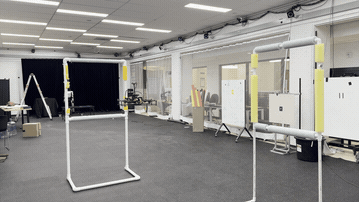
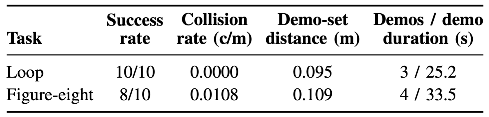
Simulation benchmarks
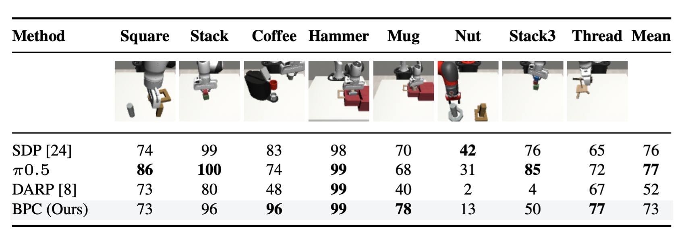
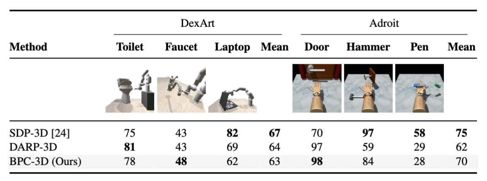
Fitting and inference cost
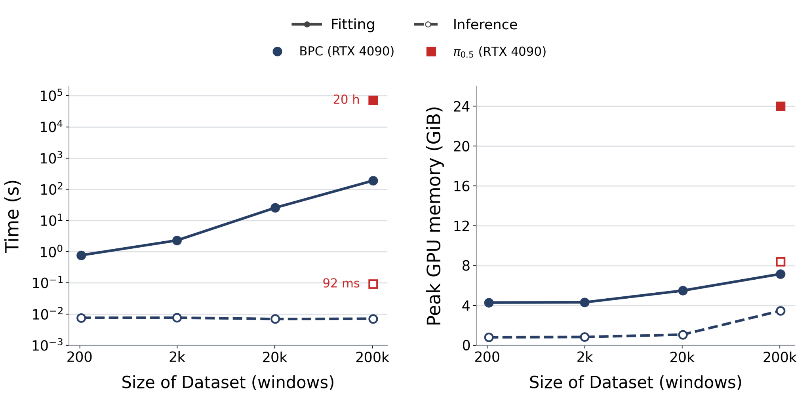
Evaluation protocols and timing details appear in Section V of the paper. Click a figure to view it at full resolution.
Editing the demonstration bank
Removing demonstrations changes the predicted trajectory in the Square task.
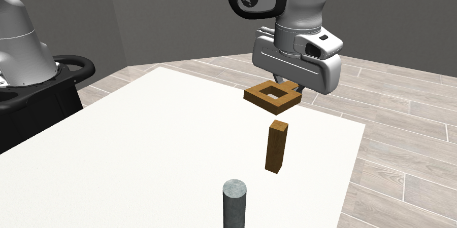
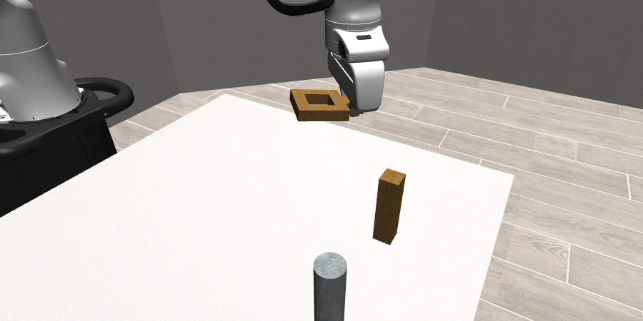
We removed 12 demonstrations while keeping the query, fitted modules, and normalizers fixed. Both rollouts succeed. The images show the same simulation step and camera view.
BibTeX
@misc{adang2026trainingfreebehaviorcloning,
title={Training-free Behavior Cloning},
author={Maximilian Adang and Timothy Chen and Lars Osterberg
and Aiden Swann and Mac Schwager},
year={2026},
eprint={2609.30134},
archivePrefix={arXiv},
primaryClass={cs.RO},
url={https://arxiv.org/abs/2609.30134}
}